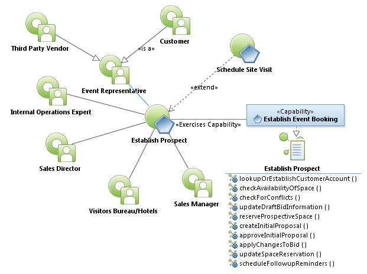
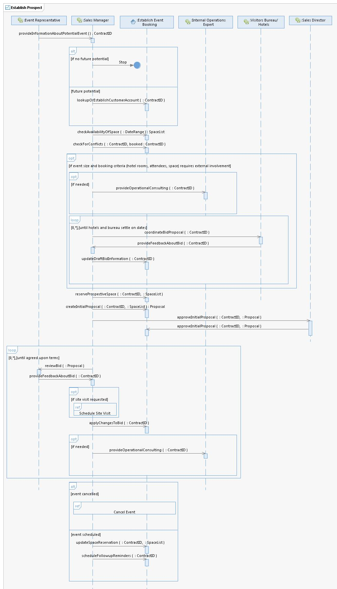

|
Establish Prospect Use Case Specification
Select to enlarge...

Establish Prospect Use Case Model
|
Scope: The Event Representative, who could be the actual
Customer or a Third Party, contacts the Austin Convention Center for
information about a potential event. The Sales Manager determines if
the customer is viable based on a number of factors and if promising,
establishes a Customer Account (or use existing customer account.) The
Sales Manager uses the system to check availability of space and check
for conflicts. If the event size and booking criteria requires external
involvement, the Sales Manager may request Internal Operations Expert
to provide operational consulting and coordinate with Visitors
Bureau/Hotels to coordinate bid proposal until Visitors Bureau/Hotels
settle on dates. Once dates are established, the Sales Manager uses the
system to reserve prospective space and create the initial bid. The
Sales Director uses the system to approve the initial Proposal. The
Sales Manager reviews the Proposal with the Event Representative and
uses the system to apply any necessary changes to the bid. The Sales
Manager uses the system to cancel an event or update space reservation.
Select to enlarge...

Establish Prospect Sequence Diagram
|
Table of Interface Descriptions
| Type/Interface | Description |
|---|
Sales Manager/
provideInformationAboutPotentialEvent |
The Sales Manager obtains the name of event, type of event,
industry demographic, space requirements, history (past event
locations), type of organization, attendee, load-in time, setup
requirements, food and beverage needs, operational requirements
(security, IT, parking, etc), how many hotel rooms needed and day
pattern (weekends, holidays, their flexibility). An inquiry can come
from customer, the convention visitors bureaus, phone, email, another
third party (conference direct/AMEX, travel, etc.), interoffice,
Chamber of Commerce, etc. |
FS041
Establish Event Booking/
lookupOrEstablishCustomerAccount |
Using the company name/legal name/acronym, the Sales Manager
searches the system to determine if there is an existing customer
account. If there is not an existing customer account and the inquiry
is a viable lead, the Sale Manager creates a customer Account using
company name/legal name/acronym, industry demographic, type of
organization, contact names, lead source, address, if there is a third
party relationship. Sometimes more than one account is created to
describe a hierarchy (parent/child) relationships, ex., one account for
University of Texas and one for the math department. |
FS042
Establish Event Booking/
checkAvailabilityOfSpace |
Once the customer meeting requirements are received, the Sales
Manager uses the system to pull up an Event Diary which displays a grid
indicating who is in what room, when, group status (current system
color codes - contracted groups are displayed in one color, definite
groups are in another - the system allows for the displayed colors to
be configured), and what's currently available. The grid allows the
Sales Manager to drill down to see other options offered to other
potential groups. When a customer negotiates for business, they may
provide several dates and space option(s) and each option is specified
in the Event Diary. The Sales Manager uses the system to change the
reserve space options and the system indicates different offerings and
available space. The Grid also allows the Sales Manager to schedule
site visits during times in which there is little or no event activity,
as deemed appropriate by the Sales Manager. |
FS043
Establish Event Booking/
checkForConflicts |
The Sales Manager uses the system to examine simultaneous bookings
within the building to ensure there are no conflicts from opposing
groups (competing organizations, attendee volumes, opposing functions,
operational limitations, holidays, etc.). The System provides feedback
about groups within the same demographic that fall within a period of
time. The Sales Manager can inquire the system to discover specific
demographic groups scheduled within a date time range. |
Internal Operations Expert/
provideOperationalConsulting |
The Sales Manager determines the customer needs input from one of
the Convention Center Operational experts. Includes various disciplines
such as security, IT, utilities, food and beverage, etc.). The Sales
Manager communicates with the Internal Operations Expert to obtain
needed information, price information, etc. If necessary, the Internal
Operations Expert may contact the Event Representative directly and
communicates any necessary changes to the Sales Manager. |
Visitors Bureau/Hotels/
coordinateBidProposal |
The Sales Manager coordinates with hotels and Convention Center to establish mutually available dates. |
Sales Manager/
provideFeedbackAboutBid |
The Sales Manager reviews the provided feedback about the event to
annotate in the system and updates traces (scheduled activities) for
follow up. |
FS044
Establish Event Booking/
updateDraftBidInformation |
If needed, the Sales Manager updates the Customer Account to reflect needed changes (dates, location of events, etc.). |
FS045
Establish Event Booking/
reserveProspectiveSpace |
The Sales Manager uses the system to match the space requested to
what's available, reserves the space indicating the Event dates, notes,
user defined fields, abbreviation, type of event, booking name, number
of room nights, peak rooms, deadline date, rental cost, anticipated
credits, source group, lead sources, number of rooms on Sunday,
Contract ID, move in and move out dates for the event. The space
reservations default from 6 AM to midnight blocks. [Note: Most leases
are full day, even though an event may only use a specific time window.] |
FS046
Establish Event Booking/
createInitialProposal |
The Sales Manager uses the system to generate a proposal that
outlines dates available and pricing, the proposal includes links to
operations manuals online and other information. Sometimes the proposal
includes multiple space configurations/dates and sometimes only one is
provided. The system provides calculated credits as well. |
Sales Director/
approveInitialProposal |
The system provides indication to the Sales Director that an
Initial Proposal is ready for review. The Sales Director examines the
elements of the event and the price/credit quotes. |
FS047
Establish Event Booking/
approveInitialProposal |
The Sales Director uses the system to indicate acceptance of the
initial proposal. The date, time and electronic signature is stored
with the Contract ID. |
Event Representative/
reviewBid |
The Event Representative evaluates the bid proposal. |
Sales Manager/
provideFeedbackAboutBid |
The Sales Manager reviews the provided feedback about the event to
annotate in the system and updates traces (scheduled activities) for
follow up. |
FS048
Establish Event Booking/
applyChangesToBid |
Based on feedback, The Sales Manager uses the system to draft another bid proposal for the Event Representative. |
FS049
Establish Event Booking/
updateSpaceReservation |
If changes are needed for an event, the Sales Manager uses the system to make modifications. |
FS050
Establish Event Booking/
scheduleFollowupReminders |
The Sales Manager uses the system to schedule various traces
(activities) such as site visits. [Note: Scheduling a Site Visit is
another use case.] |
|
{kind=link}
{kind=link}